REP 43.6.2 消卷皮带 上方/消卷器 皮带 下方 
参考 PL:PL 43.6, PL 43.7, PL 43.8

更换 消卷皮带 上方 和 消卷皮带 下方 (6个 x 2) 同时.
更换 Kit: 604K 99470 (6个)
To 更换 one 零件/部分 of 消卷器 辊 Kit, the entire Kit 应 replaced.
更换 Kit: 605K 93850 (PL 43.6)
此 仅 适用于 the 型号 在...之前 以下 序列号 numbers.
类型 | Cut-in 序列号 numbers of 适用的 machines |
|---|---|
CDM 560 (FB/FBAP/WW) | 001163 |
CDM 770 (FB/FBAP/WW) | 100919 |
Removal

执行IOT关机步骤. 确认电源已关闭并拔掉电源插头.
拆卸 CDM. (CDM560: REP 43.1.1, CDM770: REP 43.1.2)
Raise 滑槽 杠杆 (2a). (PL 43.9)
拆卸 CDM 消卷皮带 电机 1 组件. (REP 43.5.2)
拆卸 消卷器 传动皮带 1. (PL 43.6)
拆卸 CDM 消卷皮带 电机 2 组件. (REP 43.5.3)
拆卸 消卷器 传动皮带 2. (PL 43.6)
拆卸 CDM 消卷器 Cam 电机组件. (REP 43.5.1)
拆卸 Cam 皮带. (PL 43.5)
拆卸 消卷器 弹簧. (图 1)
拆卸 KL 卡扣.
拆卸 Posi Cam 执行器.
拆卸 Cam Pulley.
拆卸 消卷器 弹簧.
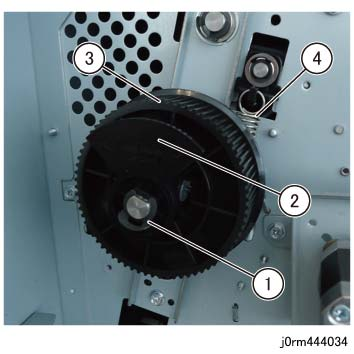
(图 1) rm444034
拆卸 drive components 和 弹簧. (图 2)
拆卸 KL 卡扣, TI Collar, Friction 离合器, 和 Pulley/ Collar.
拆卸 KL 卡扣, TI Frange 组件, Friction 离合器, 和 Pulley/Collar.
拆卸 Pulley.
拆卸 KL 卡扣 和 卡纸 CL 齿轮组件.
拆卸 KL 卡扣 和 卡纸 CL 齿轮组件.
拆卸 消卷器 弹簧.
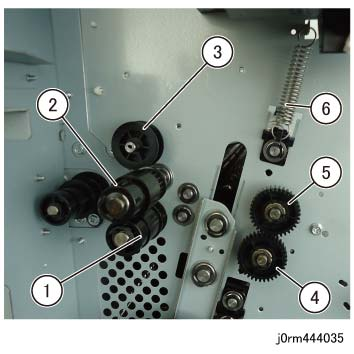
(图 2) rm444035
拆卸轴承 和 Adj Block 在后面. (图 3)
拆卸 KL 卡扣 (x6) 和 垫圈 (x6).
拆卸 E 卡扣.
拆卸轴承 (x10).
拆卸 Adj Block.
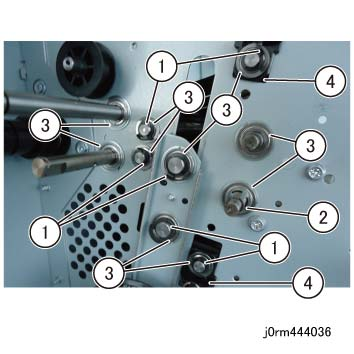
(图 3) rm444036
[更换时 和/与 消卷器 辊 Kit (PL 43.6)] (图 4)
拆卸螺钉（x4）.
拆卸 KL 卡扣 (x2) 和 垫圈 (x2).
拆卸 E 卡扣.
拆卸轴承 (x10).
拆卸 Adj Block.
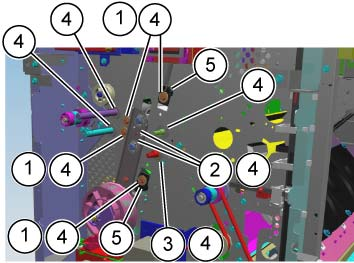
(图 4) cd443061
拆卸 旋钮 组件 (1b). (图 5)
拆卸螺钉.
拆卸 旋钮 组件.
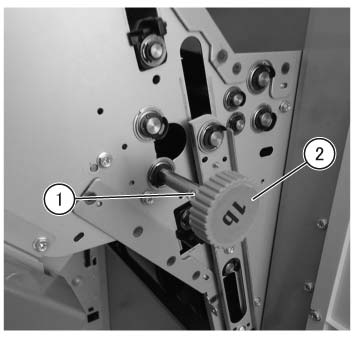
(图 5) rmw444001
拆卸轴承 和 Adj Block 在前面. (图 6)
拆卸 消卷器 弹簧 (x2).
拆卸 KL 卡扣 (x10) 和 垫圈 (x10).
拆卸轴承 (x10).
拆卸 Adj Block (x2).
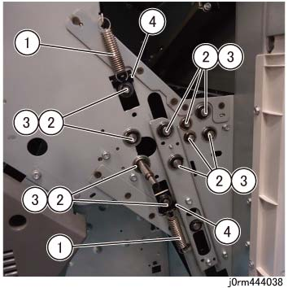
(图 6) rm444038
[更换时 和/与 消卷器 辊 Kit (PL 43.6)] (图 7)
拆卸 消卷器 弹簧 (x2).
拆卸螺钉（x4）.
拆卸 KL 卡扣 (x6) 和 垫圈 (x6).
拆卸轴承 (x10).
拆卸 Adj Block (x2).
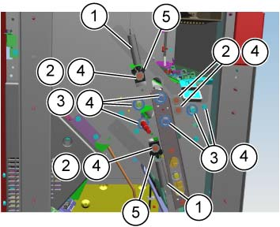
(图 7) cd443062
拆卸 消卷皮带 上方. (图 8)
拆卸 Adj 轴, Dec I U 辊, Pene 轴, Pene 辊, 和 Dec 出 辊.
拆卸 消卷皮带 上方 (x6).
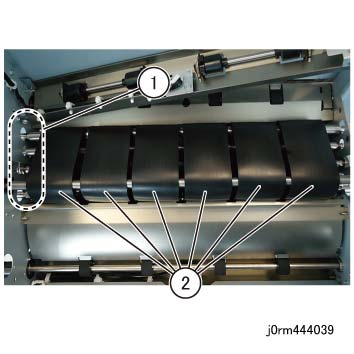
(图 8) rm444039
拆卸 消卷皮带 下方. (图 9)
拆卸 Adj 轴, Dec IL 辊, Pene 轴, Pene 辊, 和 主 辊.
拆卸 消卷皮带 下方 (x6).
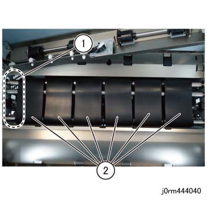
(图 9) rm444042
安装
更换后, 输入 Diag 模式 和 clear the [DC135 HFSI] 计数器.
Chain 链接:959-800
[...的安装 消卷器 辊 Kit (PL 43.6)]
此 步骤 涂抹/施加 到 4 replaced 设置 螺钉 的 kit. (图 10)
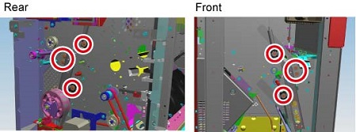
(图 10) cd443063
Use one 以下 辊 rotation-prevention jigs.
Bundled 和/与 消卷器 辊 Kit
插入 螺钉 tip 的 辊 rotation-prevention jig 进入 the hole of 轴 该 is 用...固定 螺钉.
Place the handle 的 辊 rotation-prevention jig 在...上 纸张 metal of 框架 to prevent rotation.
[后面] (图 11)
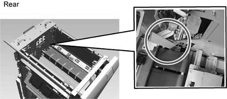
(图 11) cdw443005
[前面] (图 12)
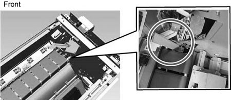
(图 12) cdw443006
拧紧螺钉.
[后面] (图 13)
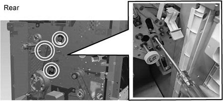
(图 13) cdw443007
[前面] (图 14)
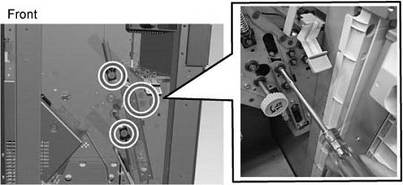
(图 14) cdw443008